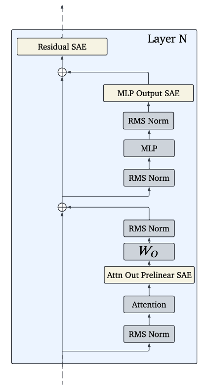
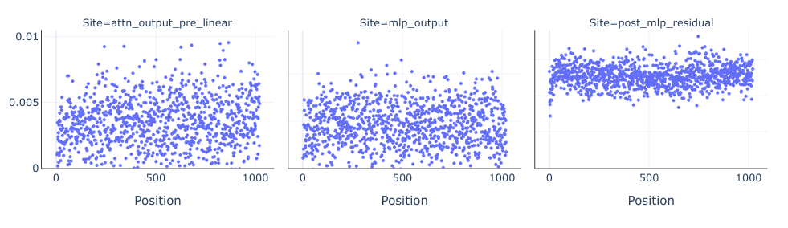
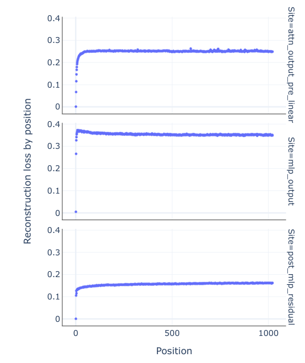
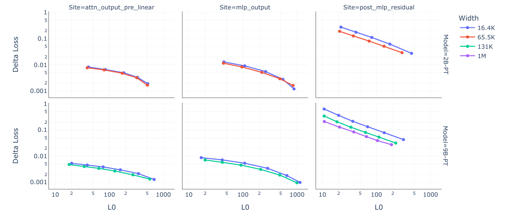
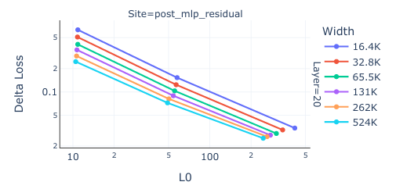
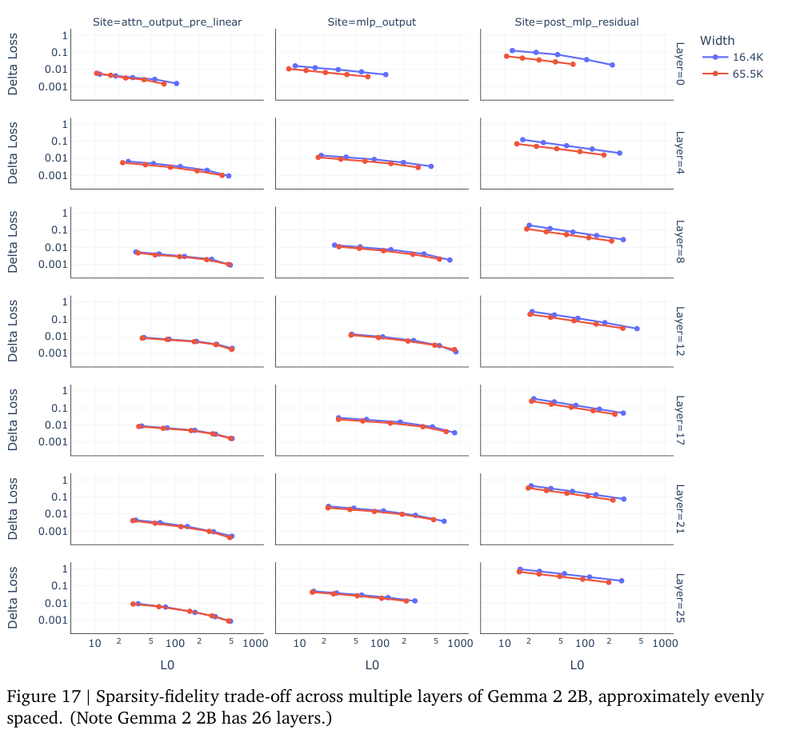
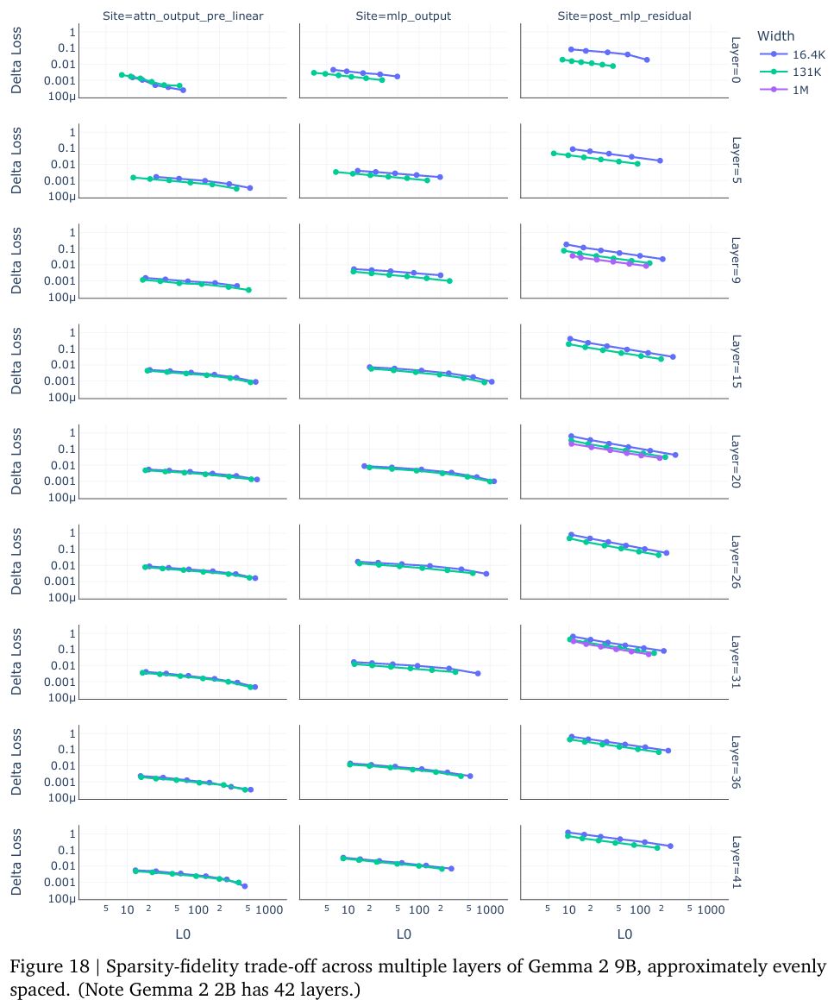
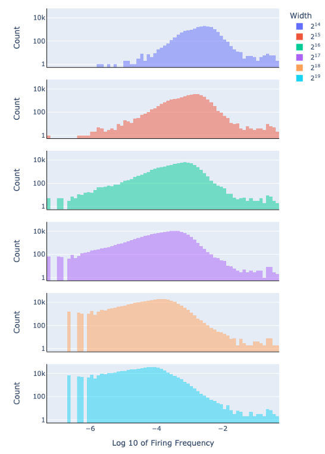

[논문 리뷰] Gemma Scope: Open Sparse Autoencoders Everywhere All At Once on Gemma 2
본 게시글은 Sparse Autoencoder의 from-scratch 구현에 참고하기 위한 목적으로 설계 상의 디테일에 초점이 맞춰져 있어, 독자가 읽기 편한 형태로 작성하지 못한 점 양해 부탁드립니다. 시간날 때 인사이트 전달 중심으로 다시 정리해보겠습니다.
Abstract
Opened Resources:
- Weights and tutorial: https://huggingface.co/google/gemma-scope
- Interactive demo: https://neuronpedia.org/gemma-scope
GemmaScope 분석 모델:
- Gemma 2 2B and 9B (base?): all layers and sub-layers
- Gemma 2 27B base: select layers
- (Insturction: primarily train SAEs on the Gemma 2 pre-trained models, but additionally release SAEs trained on instruction-tuned Gemma 2 9B for comparison)
GemmaScope(SAE)’s Architecture:
- JumpReLU
Introduction & Preliminaries
Usage of SAE:
- If this approach succeeds, it could help unlock many of the hoped for applications of interpretability, such as (1)detecting and fixing hallucinations, being able to reliably (2)explain and debug unexpected model behaviour and (3)preventing deception or manipulation from autonomous AI agents.
- We believe that a comprehensive suite is essntial for enabling more ambitious applications of interpretability, such as circuit analysis, which may be necessary to answer mysteries about larger models like what happens during chain of thought or in-context learning.
Problem-to-be-Resolved:
- but there are many open problems to be resolved:
- validating or red-teaming SAEs as an approach;
- learning how to measure their performance;
- learning how to train SAEs at scale efficiently and well;
- exploring how SAEs can be productively applied to real-world tasks;
- The works that use SAEs on more modern(**larger, LLM) models have normally focused on residual stream SAEs at a single layer*.
Feature of GemmaScope:
- GemmaScope contains more than 400 sparse autoencoders in the main relase (for each model, differing layers* and sparsity levels)
- and with 30 million learned features in total (**though many features likey overlap*)
- trained on 4-16B tokens of text each.
JumpReLU:
\[ JumpReLU_{\theta}(\textbf{z}) := \textbf{z} \odot H(\textbf{z} - \boldsymbol{\theta}) \]
\[ Loss := ||x-f(x)||^{2}_{2} + \lambda ||f(x)||_{0} \]
- JumpReLU SAE have been shown to be a slight Pareto improvement over other approaches, and allow for a variable number of active latents at different tokens, unlike TopK SAE.
- 𝜽 > 0 is the JumpReLU’s vector-valued learnable threshold paramater.
- 𝐻 is the Heaviside step function, which is 1 if its input is positive and 0 otherwise.
- 직관적 설명: JumpReLU는 임계값 위의 pre-activations는 변경하지 않지만, 임계값 아래일 경우 0으로 변경한다. 또한 각 잠재 변수마다 다른 학습된 임계 값을 가진다.
Training Details
- ⚠️“Once training is complete, we rescale the trained SAE parameters so that no input normalization is required for inference.”
- (Appendix A 참고)
Data:
- SAEs with 16.4K latents are trained for 4B tokens
- SAEs with 1M-width latents are trained for 16B tokens.
- And all other SAEs are trained for 8B tokens.
- Use 32-bit precision in all our experiments.
Location:
- trained on three locations per layer:
- attention-head outputs, before the final linear transformation \(W_o\) and RMSNorm has been applied.
- MLP outputs after the RMSNorm has been applied.
- post MLP residual stream.

Layer Indices:
- Gemma-2 (2.6B): total 26 layers
- {5, 12, 19}
- Gemma-2 (9B) & Gemma-2-IT (9B) : total 42 layers
- {9, 20, 31}
- Gemma-2 (27B): total 46 layers
- {10, 22, 34}
- (대충 보니까: 20%, 47%, 73% 정도 위치에서 1개씩 뽑는듯?)


- (순서대로 (1) Attention-SAE; (2)MLP-SAE; (3)RS-SAE;의 토큰 위치별 reconstruction loss. 보다시피 MLP SAE가 토큰 위치에 상대적으로 강건하다.)
Optimization:
- Learning rate (acrosss all training runs): \(\eta = 7 \times 10^{-5}\)
- Warmup from \(0.1 *\eta\) to \(1.0*\eta\) over the first 1,000 training steps.
- train with the Adam optimizer
- with \((\beta_1, \beta_2)=(0, 0.999), \epsilon=10^{-8}\)
- batch size of 4,096
- used a linear warmup for the sparsity coefficient from 0 to \(\lambda\) over the first 10,000 training steps.
- using a pre-encoder bias (Bricken et al., 2023)
- Throughout training, restrict the columns of \(W_{dec}\) to have unit norm by renormalizing after every update. (Bricken et al., 2023)
Initialization:
- initialized the JumpReLU threshold as the vector \(\theta=\{0.001\}^{M}\)
- initialized \(W_{dec}\) using He-uniform initialization(He et al., 2015) and rescale each latent vector to be unit norm.
- \(W_{enc}\) is initialized as the tranpose of \(W_{dec}\), but they are not tied afterwords.
- biases \(b_{dec}\) and \(b_{enc}\) are initialized to zero vectors.
Evaluation:
- “now there is no consensus on what constitutes a reliable metric for the quality of a sparse autoencoder or its learned latents and that this is an ongoing area of research and debate.”
- Evaluating the Sparsity-Fidelity trade-off:
- Sparsity: use the mean L0-norm of latent activations: \(\mathop{\mathbb{E}}_{x}||f(x)||_{0}\) as a measure of sparsity.
- Fidelity (reconstruction): used two metrics:
- (primary metric) Delta loss of LM, the increase in the cross-entropy loss experienced by the LM when splice the SAE into the LM’s forward pass.
- (secondary metric) Fraction of Variance Unexplained (FVU) — also called the normalized loss — as a measure of reconstruction fidelity. This is the mean reconstruction loss \(L_{reconstruct}\) of a SAE normalized by the reconstruction loss obtained by always predicting the dataset mean.
- Note that FVU is purely a measure of the SAE’s ability to reconstruction the input activations, not taking into account the causal effect of any error on the downstream loss.
Result, Analysis & Case Studying
Sequence Position:
- Delta loss is consistently higher for residual stream SAEs compared to MLP and attention SAEs, whereas FVU is roughly comparable.
- Why residual stream has higher error?
- “We conjecture this is because even small errors in reconstructing the residual stream can have a significant impact on LM loss, whereas a single MLP or attention sub-layer’s output have a limited impact on the LM loss.“
- “The residual stream is the bottleneck by which the previous layers communicate with all later layers. Any given MLP or attention layer adds to the residual stream, and is typically only a small fraction of the residual, so even a large error in the layer is a small error to the residual stream and so to the rest of the network’s processing.”
- Why residual stream has higher error?

SAE width (feature_dim)*:
With equal conditions, wide SAEs learn more latent directions and provide better reconstruction fidelity at a given level of sparsity than narrow SAEs.

Intuitively, this suggests that we should use the widest SAEs practicable for downstream tasks.

(근데 상당히 무의미해 보이는데…?) 
However, there are also some opposite intuitions:
- The phenomenon of ‘feature-splitting’(Bricken et al., 2023) — where latents in a narrow SAE seem to split into multiple specialized latents within wider SAEs — is one sign that wide SAEs do not always use their extra capacity to learn a greater breadth of features.
- It is plausible that the sparsity penalty of wide SAEs, to learn frequent compositions of existing features over using their increased capacity, but not to learn new features.
- If this is the case, it is currently unclear whether the higher width is good or bad for the usefulness of SAEs on downstream tasks.
- The phenomenon of ‘feature-splitting’(Bricken et al., 2023) — where latents in a narrow SAE seem to split into multiple specialized latents within wider SAEs — is one sign that wide SAEs do not always use their extra capacity to learn a greater breadth of features.
To test this(’feature-splitting’), we(Google) train and relase residual stream SAEs for Gemma 2 - 2B and 9B with matching sparsity coefficients and widths between \(2^{14}\)(16.4K) ~ \(2^{19}\)(524K), the SAEs are trained with different sparsity settings after layers 12 and 20 respectively.

SAE의 폭이 넓어질수록(더 많은 잠재 특징을 가질수록), 개별 잠재 특징들은 더 드물게 발화하는 경향이 있다. (specialized and sparse)
Impact of Precision:
- Trained all SAEs in 32-bit floating point precision.
- How model perform with precision at inference time? (This is particularly important for applications like circuit analysis, where users may wish to splice several SAEs into a language model simultaneously)
- float32 vs bfloat16 → Negligible impact!
Open Problems
- Deepening understanding of SAE and Improvements:
- Comparisons of residual stream SAE features across layers, e.g. are there persistent features that one can “match up” across adjacent layers?
- How are circuits connecting up superposed features represented in the weights? How do models deal with the interference between features? (Nanda et al., 2023b)
- How can SAEs efficiently capture the circular features of Engels et al., 2024?
- How much can SAEs be quantized without significant performance degradation, both for inference and training?
- How to improve performance on real-world tasks using SAEs?
- Detecting or fixing jailbreaks
- Helping find new jailbreaks/red-teaming models
- Comparing steering vectors (Turner et al., 2024) to SAE feature steering (Conmy and Nanda, 2024) or clamping (Templeton et al., 2024)
- Can SAEs be used to improve interpretability techniques, like steering vectors, such as by removing irrelevant features? (Conmy and Nanda, 2024)
- Scalable circuit analysis: What interesting circuits can we find in SAE?
- How can we pratically extend the SAE feature circuit finding algorithm in Marks et al., 2024 to larger models?
- Can we use SAE-like techniques such as MLP transcoders (Dunefsky et al., 2024) to find input independent, weights-based circuits?
- Using SAEs as a tool to answer existing questions in interpretability (about LM)?
- What does finetuning do to a model’s internals? (Jain et al., 2024)
- What is actually going on when a model uses chain of thought?
- Is in-context learning true learning, or just promoting existing circuits? (Hendel et al., 2023; Todd et al., 2024)
- Can we find any “macroscopic structure” (거시적 구조) in language models, e.g. families of features that work together to perform specialised roles, like organs in biological organisms?
- Does attention head superposition (Jermyn et al., 2023) occur in practice? E.g. are many attention features spread across several heads? (Kissane et al., 2024b)
End.